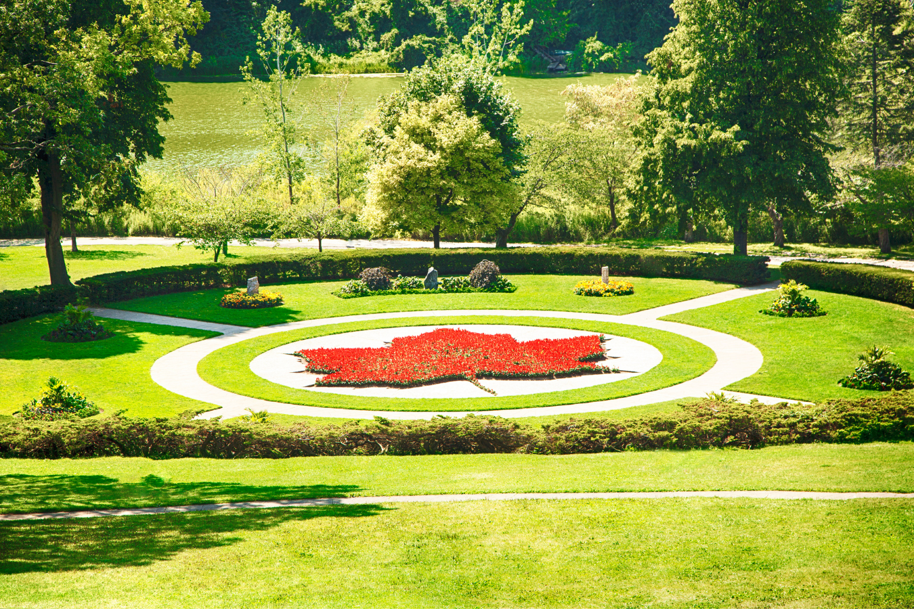
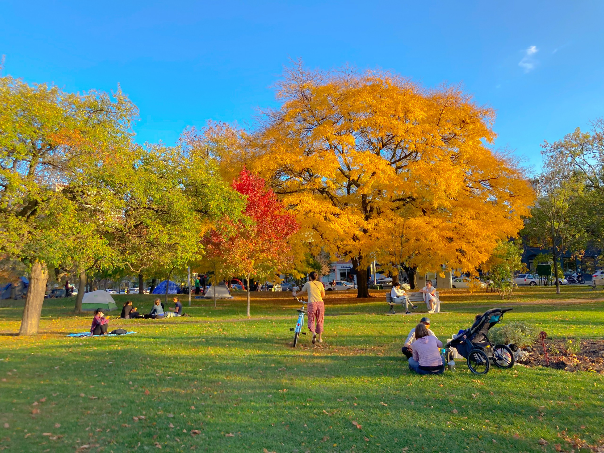
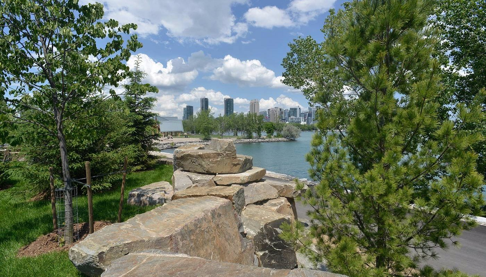

High Park

High Park, Toronto's largest public park, offers a diverse range of attractions, including hiking trails, sports facilities, a dog park, a zoo, and playgrounds.
Every May, the park comes alive with stunning Sakura cherry trees that bloom in vibrant white and pink, drawing thousands of visitors.
With its mix of wild forests and well-kept gardens, High Park boasts beautiful vegetation, making it a favored spot for runners, hikers, and families.
Trinity Bellwoods Park

Spanning about 36 acres, Trinity Bellwoods Park was once the site of Trinity College.
The park features several baseball fields, tennis courts, volleyball courts, a children's pool, and an outdoor artificial ice rink.
During the warmer months, it becomes a lively spot for meet-ups, picnics, and various outdoor activities.
In winter, visitors enjoy ice skating and cross-country skiing on the park's trails.
Trillium Park

Trillium Park offers a clear waterfront view of the downtown skyline which is especially beautiful during sunrise and sunset times.
The park offers bonfire pits for rent where reservations can easily be made online.
Various events and community activities are also hosted here, making it a vibrant spot for both locals and tourists to connect with nature and each other.